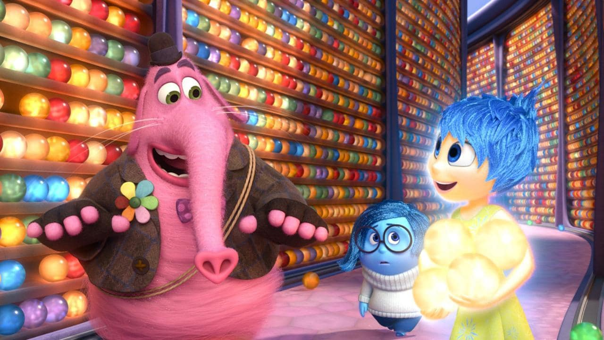

Quotes
"I go in here all the time, It's a Short Cut, you see? 'D-A-N-G-E-R', short cut!"
"Come on, Joy. One more time. I’ve got a feeling about this one."
""Louder! Louder, Joy! Sing louder!""
Bing Bong is the tritagonist of the 2015 Disney/Pixar animated film, Inside Out. He was the imaginary friend of Riley Andersen that existed within her mind.
Bing Bong was Riley's adorable imaginary friend created during her early childhood. However, as Riley grew older, she stopped playing with him, leaving Bing Bong out of a job and a bit lonely. Drifting around Long Term Memory unbeknownst to the other mental denizens, he collected happy memories he liked into a bottomless bag. He greatly missed the times he shared with Riley and was desperate to not be forgotten until one day when he is discovered by the misplaced emotions Joy and Sadness, who were accidentally ejected from Headquarters. Afraid of their sudden appearance, Bing Bong initially tried to run, but when Joy presents herself, he is thrilled to meet her. As the two need to return to Headquarters, Bing Bong, who has been forgotten for a long time, agrees to help them, more so when Joy tells him she will put him back in business when she gets back. He proposes that they take the Train of Thought that will lead them directly to Headquarters, and shows them the way.
Unfortunately, since he was created when Riley was a toddler, his naive nature impedes the duo from getting anywhere close to Headquarters. In fact, he leads them into danger in Abstract Thought, which he thinks is a shortcut. Luckily, they escape just in time before they implode. They get out, but soon Bing Bong witnesses the demolition of the childish aspects in Imagination Land with his precious wagon thrown into the Memory Dump in the process, Bing Bong falls into deep melancholy. Joy tries to get him to stop being sad by making silly faces and doing childish things, but they don't work. When Sadness talks to him, she empathizes with him, and by getting him to express his sadness, she comforts him and inspires Bing Bong to bring them to the Train of Thought.
"I go in here all the time, It's a Short Cut, you see? 'D-A-N-G-E-R', short cut!"
"Come on, Joy. One more time. I’ve got a feeling about this one."
""Louder! Louder, Joy! Sing louder!""
Helpful, fun loving, joyous, illiterate, nostalgic, friendly, childish, cheerful, sentimental, selfless